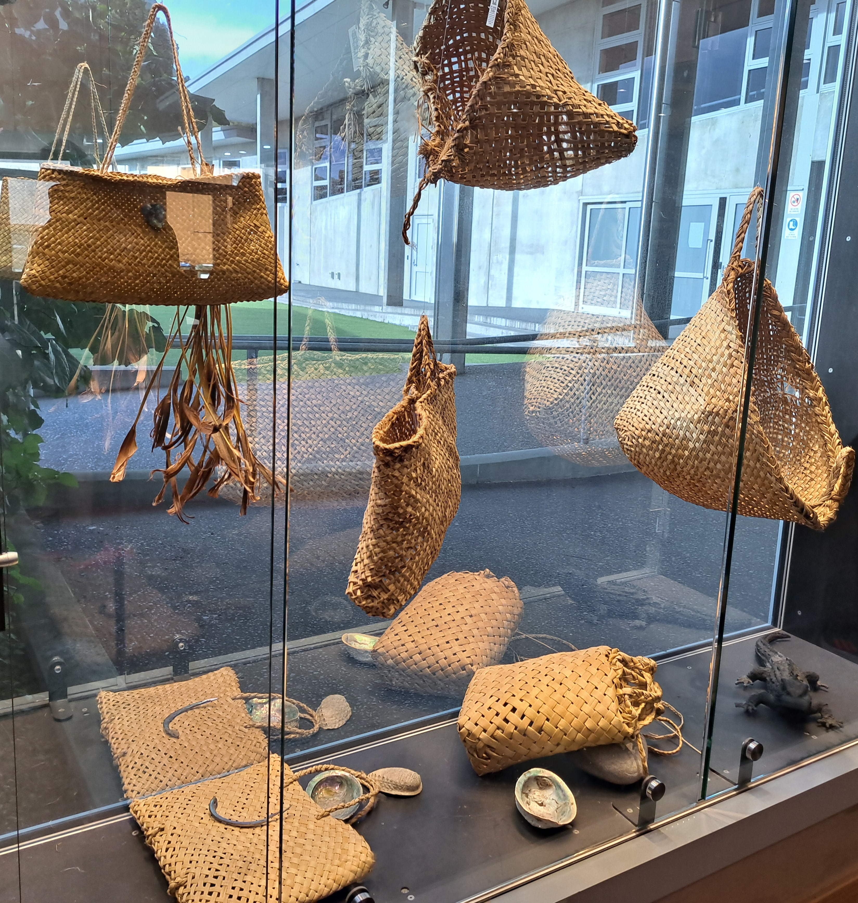
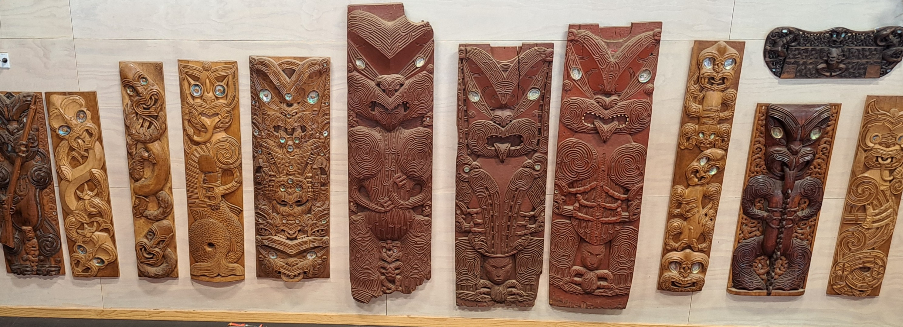

Harakeke (Flax) is unique to New Zealand and is one of our most ancient plant species. When our ancestors arrived to New Zealand they quickly discovered that flax could be woven to make clothing, housing materials and decorative tūrapa (panels) for their houses.
Two native species of flax both come from the lily family. Harakeke (common flax) grows up to three meters high and has firm, long leaves with a fine muka fibre, ideal for all types of weaving. Wharariki (mountain flax) is found along coast lines, growing up to 1.6 meters with softer leaves and less fibre than harakeke.
At the National Weaving school, students are taught the skills and traditions of a craft hundreds of years old. “I believe weaving can only be learnt the old way - by sitting, by listening, by touching and by doing,” says head of the weaving school, Edna Pahewa.
As well as learning how to weave harakeke (flax) and other materials, students learn the stories and designs unique to each iwi (tribe), as well as the Māori protocols associated with weaving. These include planting according to the phases of the moon and reciting prayers of thanks for flax and trees used.
In 1967, the first intake to the National Carving School began the task of learning the disciplines of their Māori ancestors. Among those students was Clive Fugill, the man who would become master carver of the institute today.
“I’ll never forget that first day,” says Clive, “Our master carver, Hone Taiapa, looked at us all and said, “you are here to learn the art to pass it on to generations. Keep it alive for we could lose our identity.” It was exciting to be playing such an important role to save Māori art,” says Clive, “everyone has a reason in life. This was my reason. And that’s why I’m still here over 40 years later. If we lose our arts and crafts we lose our identity.”
Today fulltime carving students study for three years at the national carving school, under the guidance of those, such as Clive Fugill and James Rickard, master carvers at Te Puia who were once institute carving students themselves.
Here at Te Puia we offer you the chance to take away traditional Māori carvings; beautiful handcrafted pieces made at our National Carving School. Look for the Te Puia Official Mark of Authenticity. We also accept carving commissions.
